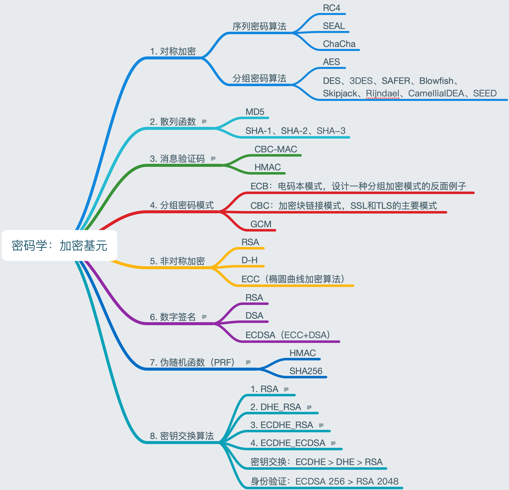
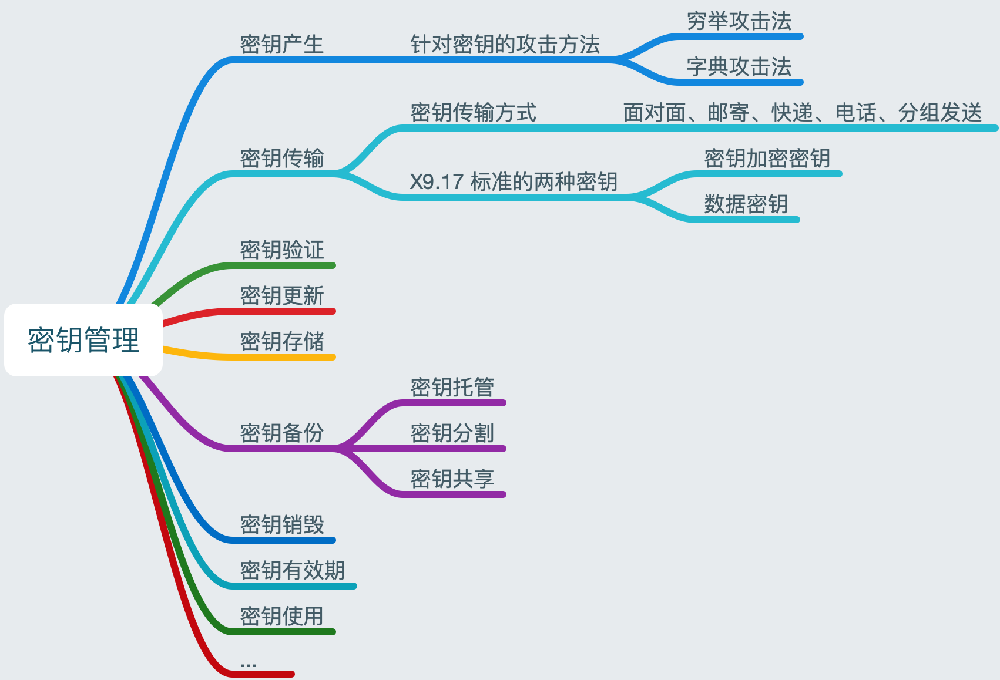
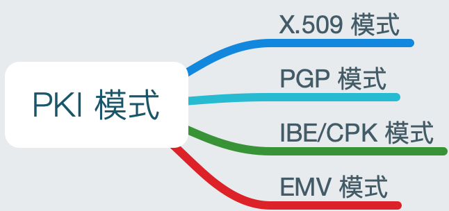
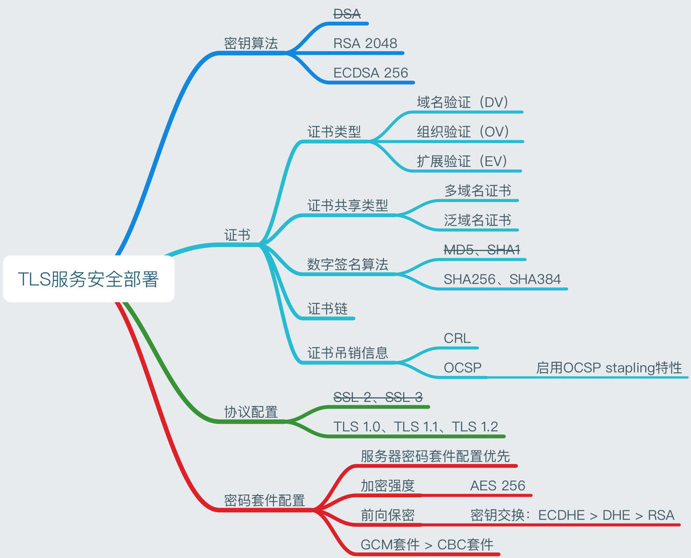

Reference: 简述 PKI 体系概述
# Public Key Infrastructure(PKI)
CA 中心管理并运营 CA 系统，CA 系统负责颁发数字证书。
专门负责颁发数字证书的系统称为 CA 系统，负责管理并运营 CA 系统的机构称为 CA 中心。所有与数字证书相关的各种概念和技术，统称为 PKI（Public Key Infrastructure）
# 加密基元
加密基元就是一些基础的密码学算法，通过它们才能够构建更多的密码学算法、协议、应用程序。

说明：
- 散列函数（散列（hash）、指纹、消息摘要、摘要算法、杂凑函数）：把任意长度的输入消息数据转化成固定长度的输出数据的一种密码算法。
- 消息验证代码：验证数据完整性，即数据没有被篡改。
- 数字签名：RSA 私钥加密，公钥解密，结合散列函数。验证消息真实性。
- 伪随机函数（PRF）：生成任意数量的伪随机数据。
- RSA：可以同时用于密钥交换和身份验证（数字签名）。
- DHE_RSA：DHE 算法：密钥协商，RSA 算法：身份验证（数字签名）。
- ECDHE_RSA： ECDHE 算法：密钥协商，RSA 算法：身份验证（数字签名）。
- ECDHE_ECDSA ：ECDHE 算法：密钥协商，ECDSA 算法：身份验证（数字签名）。
# 密钥管理

密钥管理模式：
- 无中心模式；
- 有中心模式；
# PKI 模式
PKI 是 Public Key Infrastructure 的缩写，其主要功能是绑定证书持有者的身份和相关的密钥对（通过为公钥及相关的用户身份信息签发数字证书），为用户提供方便的证书申请、证书作废、证书获取、证书状态查询的途径，并利用数字证书及相关的各种服务（证书发布，黑名单发布，时间戳服务等）实现通信中各实体的身份认证、完整性、抗抵赖性和保密性。

- 数字证书：解决公钥与用户映射关系问题；
- CA：解决数字证书签发问题；
- KMC：解决私钥的备份与恢复问题；
- 双证书机制：「签名证书及私钥」只用于签名验签，「加密证书及私钥」只用于加密解密。
- LDAP：解决数字证书查询和下载的性能问题，避免 CA 中心成为性能瓶颈。
- CRL（证书作废列表） 和 OSCP（在线证书状态协议）：方便用户快速获得证书状态。
- RA：方便证书业务远程办理、方便证书管理流程与应用系统结合。
- 电子认证服务机构：保证 CA 系统在数字证书管理方面的规范性、合规性和安全性。
# 基于数字证书可以实现四种基本安全功能:
- 身份认证；
- 保密性；
- 完整性；
- 抗抵赖性；
# PKI 基本系统组件
完整的 PKI 系统必须具有数字证书、认证中心（CA）、证书资料库、证书吊销系统、密钥备份及恢复系统、PKI 应用接口系统等构成部分。
组件描述:
- 数字证书: 包含了用于签名和加密数据的公钥的电子凭证，是 PKI 的核心元素
- 认证中心（CA）: 数字证书的申请及签发机关，CA 必须具备权威性
- 证书资料库: 存储已签发的数字证书和公钥，以及相关证书目录，用户可由此获得所需的其他用户的证书及公钥
- 证书吊销列表（CRL）/OCSP: 在有效期内吊销的证书列表，在线证书状态协议 OCSP 是获得证书状态的国际协议
- 密钥备份及恢复: 为避免因用户丢失解密密钥而无法解密合法数据的情况，PKI 提供备份与恢复密钥的机制。必须由可信的机构来完成。并且，密钥备份与恢复只能针对解密密钥，签名私钥不能够作备份
- PKI 应用接口（API）: 为各种各样的应用提供安全、一致、 可信的方式与 PKI 交互，确保建立起来的网络环境安全可靠，并降低管理成本
# TLS

密码套件决定了本次连接采用哪一种加密算法、密钥协商算法、HMAC 算法，即各个密码学算法的组合。